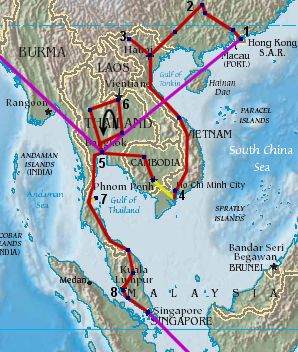

Caroline and Helen's Round-the-World Trip
World Map Page
Thailand, Hong Kong, China, Vietnam, Cambodia, Malaysia, Singapore

We flew into Bangkok on the 31st October, spent the night on the floor, and flew on to Hong Kong [1]
the next day.
After a few days in Hong Kong, we moved on into China, through Hong Kong, Guangzhou, Yangshuo, Guilin [2] and Nanning, then into Vietnam and to Hanoi. A sleeper to Lao Cai [3] gave us a chance to see the local villages around Sapa (slightly south-west of Lao Cai), and then it was back to Hanoi for a day before heading down to Hue and then on to Ho Chi Minh (Saigon) [4].
Then it was down to the Mekong Delta near My Tho, and a boat trip later saw us enter Cambodia and head into Phnom Penh. We then headed up to the ancient capital of Angkor, and then an 'interesting' journey over the border again and into Bangkok [5].
Next, a trip round Thailand, taking in Ayutthaya, Pak Chong, Ban Phu and Sang Khom [6], and Sukkothai, before heading back to Bangkok again.
Then it was down to Ko Tao [7] to learn Scuba-diving in readiness for the Great Barrier Reef. Having spent too much time in Thailand, we moved on to Malaysia, to Kota Bharu first before slowly making our way into the Taman Negara National Park, and on down to Kuala Lumpar [8]. A quick stop at Melaka did us over before we made it into Singapore for Christmas.
After a few days in Hong Kong, we moved on into China, through Hong Kong, Guangzhou, Yangshuo, Guilin [2] and Nanning, then into Vietnam and to Hanoi. A sleeper to Lao Cai [3] gave us a chance to see the local villages around Sapa (slightly south-west of Lao Cai), and then it was back to Hanoi for a day before heading down to Hue and then on to Ho Chi Minh (Saigon) [4].
Then it was down to the Mekong Delta near My Tho, and a boat trip later saw us enter Cambodia and head into Phnom Penh. We then headed up to the ancient capital of Angkor, and then an 'interesting' journey over the border again and into Bangkok [5].
Next, a trip round Thailand, taking in Ayutthaya, Pak Chong, Ban Phu and Sang Khom [6], and Sukkothai, before heading back to Bangkok again.
Then it was down to Ko Tao [7] to learn Scuba-diving in readiness for the Great Barrier Reef. Having spent too much time in Thailand, we moved on to Malaysia, to Kota Bharu first before slowly making our way into the Taman Negara National Park, and on down to Kuala Lumpar [8]. A quick stop at Melaka did us over before we made it into Singapore for Christmas.